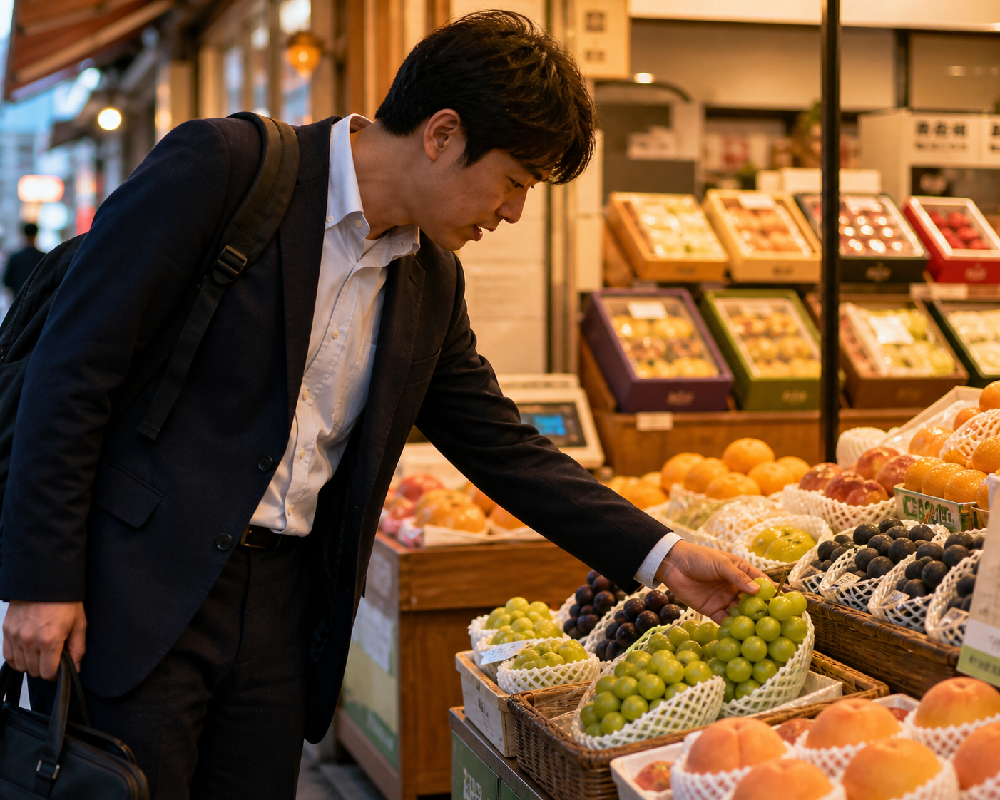

INSIGHT · 2026.09.03
초가을 매대에서
한 송이 포도가 먼저 팔리는 이유
해가 조금 빨리 내려가는 초가을 저녁, 가게 앞 손은 길게 머물지 않습니다. 큰 상자를 한 번 바라본 뒤에도 결국 사람들 손에 남는 것은 오늘 바로 씻어 먹을 수 있는 한 송이인 경우가 많습니다.

포도는 원래 넉넉한 과일처럼 보입니다. 한 상자, 한 박스, 선물 세트 같은 말과도 잘 붙습니다. 그런데 평일 저녁 매대 앞에서는 그 넉넉함보다 손에 바로 잡히는 단위가 먼저 움직입니다. 집에 가서 한 번 헹구면 끝나는지, 냉장고 자리를 많이 차지하지 않는지, 둘이 먹고 남기지 않을 정도인지가 더 중요해집니다.
이 장면은 소비가 가벼워졌다는 뜻이라기보다 하루가 촘촘해졌다는 뜻에 가깝습니다. 예전보다 과일을 덜 좋아해서가 아니라, 과일을 먹기 위해 따로 시간을 내기 어려워진 저녁이 많아졌기 때문입니다. 그래서 사람들은 포도를 고를 때도 품종 설명보다 지금 내 손과 식탁에 맞는 크기를 먼저 봅니다.
초가을 매대에서 먼저 움직이는 과일은 가장 화려한 과일보다 오늘 저녁에 바로 연결되는 과일일 때가 많습니다.
한 송이 포도는 작은 선택처럼 보이지만, 사실은 꽤 많은 조건을 동시에 해결합니다. 칼이 필요 없고, 접시를 크게 차리지 않아도 되고, 잠깐 씻어 식탁에 올리면 바로 끝납니다. 선물 상자가 맡던 역할과는 다르지만, 평일 저녁의 과일로서는 오히려 더 또렷한 자리를 갖습니다.
넉넉함보다 즉시성, 설명보다 손에 잡히는 크기, 품격보다 오늘 저녁의 부담 없음. 한 송이 포도는 그 세 가지를 한 번에 보여 주는 초가을의 단위입니다.
그래서 이런 변화는 가격표만으로는 잘 보이지 않습니다. 손님이 매대 앞에서 얼마나 오래 멈추는지, 큰 포장 앞에서 한 번 더 생각하는지, 작은 단위 앞에서 바로 결정을 내리는지 같은 장면 속에 더 먼저 드러납니다. 시장을 읽는다는 것은 결국 이런 망설임의 길이를 읽는 일과도 닿아 있습니다.
대한과일협회가 INSIGHT에서 남기고 싶은 것도 바로 이런 순간입니다. 숫자가 말해 주기 전부터 이미 바뀌고 있는 생활의 리듬. 초가을 저녁에 한 송이 포도가 먼저 팔리는 장면은, 과일 소비가 어디로 더 가까워지고 있는지를 조용하지만 분명하게 보여 줍니다.